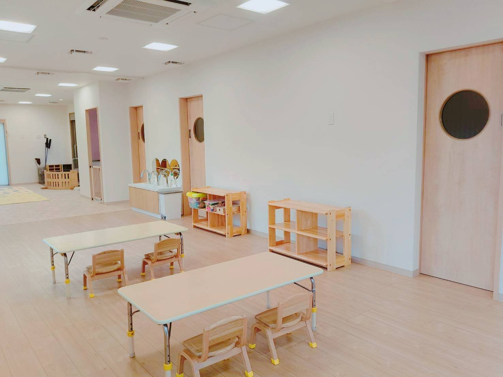
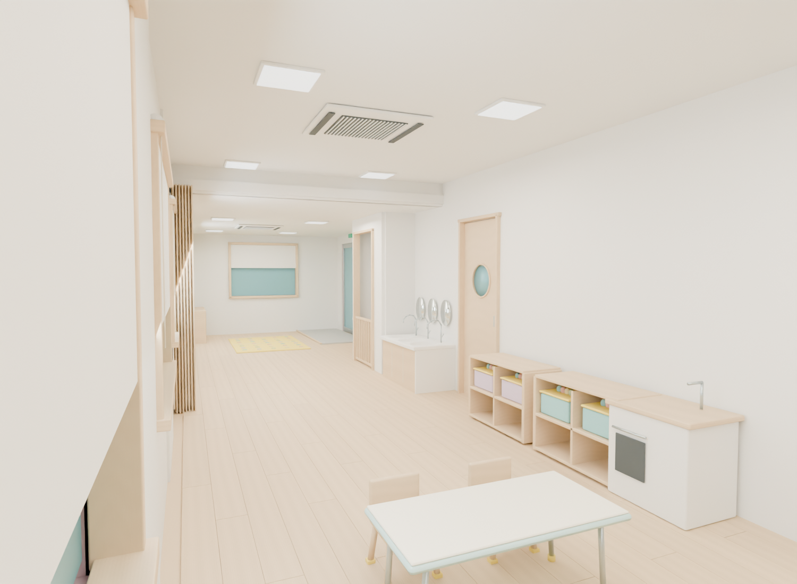
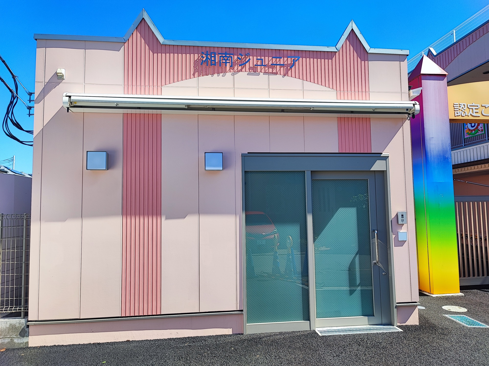
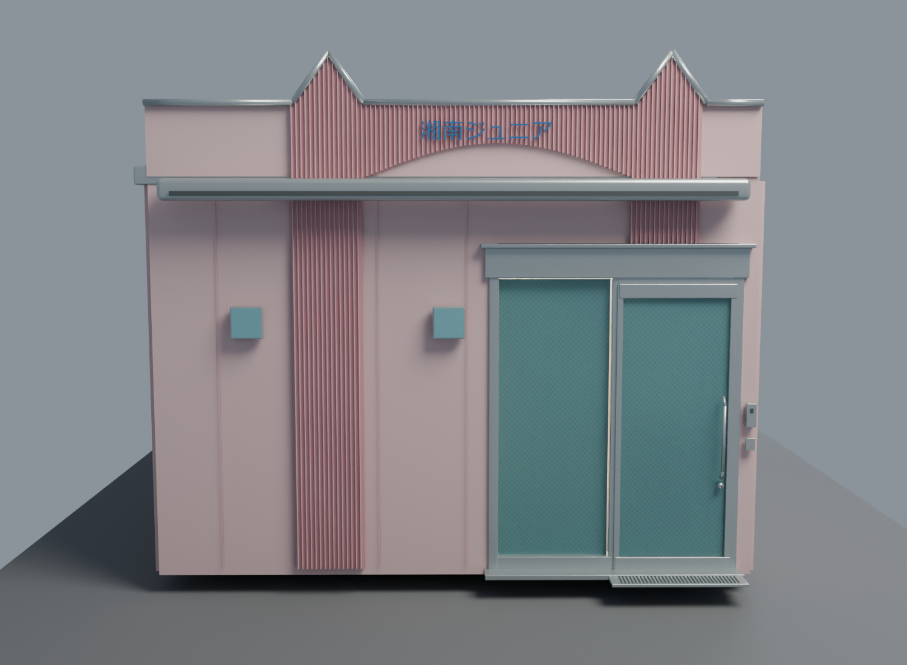
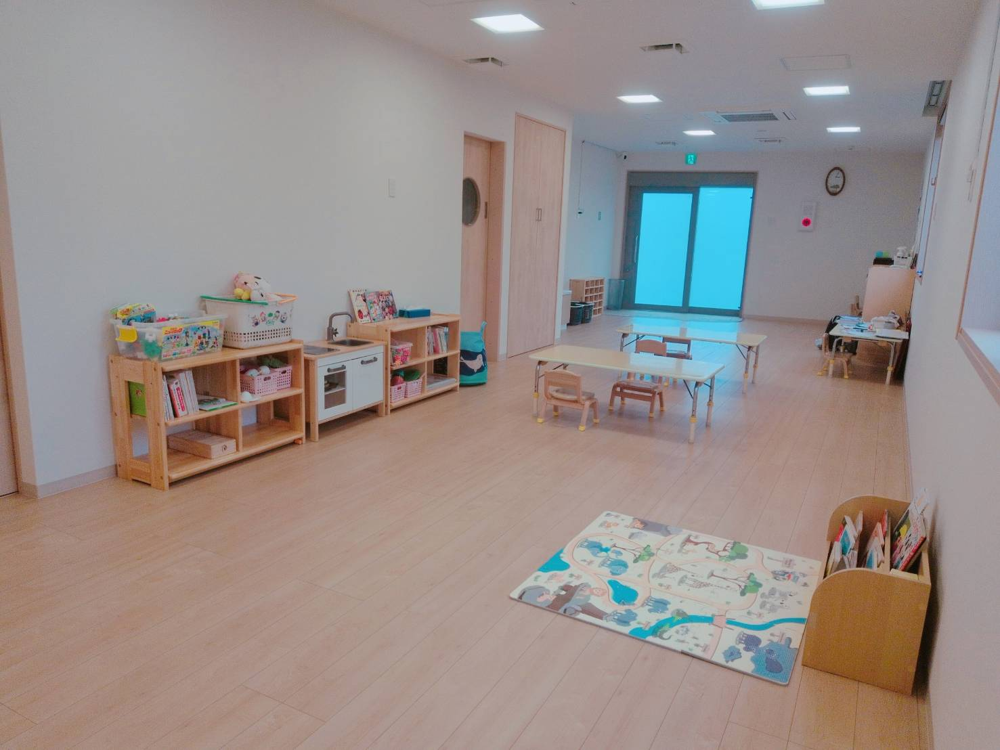
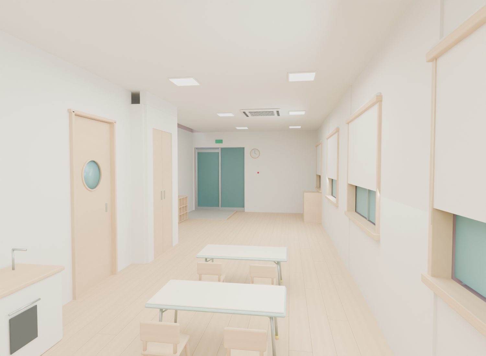

2つの入口と室内のつながり
正面口はPDF左側の玄関1です。もう一つはPDF右下の長い側面にある玄関2です。前回の「両端の短い壁に入口を置いたモデル」を訂正しました。
写真1：室内から側面の玄関2へ
写真の奥の右壁側が玄関2。給湯室の張り出しと洗面台の先に入口の土間が続きます。

参照写真：1000037328.jpg
改訂モデル：同じ方向を向いた室内写真2：正面口・玄関1の外観
看板とオーニングのある面をPDF左端へ修正。外から見た右寄りにガラス扉があります。

参照写真：1790821183481.jpg
改訂モデル：正面口の外観写真3：室内から正面口・玄関1へ
奥のガラス扉が玄関1。左壁沿いの収納と丸窓付き扉を手前に置き、正面口へ続く通路を確保しました。

参照写真：building_indoor.jpg
改訂モデル：玄関1方向の室内図面・写真と入口の位置関係を照合しています。家具の小物、ガラスの網目、建具・器具の細部、撮影レンズの違いなどは完全一致ではありません。
操作できる3Dモデルを開く